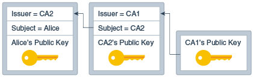

10 Java PKI Programmers Guide
The Java Certification Path API consists of classes and interfaces for handling certification paths, which are also called certification chains. If a certification path meets certain validation rules, it may be used to securely establish the mapping of a public key to a subject.
PKI Programmers Guide Overview
The Java Certification Path API defines interfaces and abstract classes for creating, building, and validating certification paths. Implementations may be plugged in using a provider-based interface.
This API is based on the Cryptographic Service Providers architecture, described in the Java Cryptography Architecture Reference Guide, and includes algorithm-specific classes for building and validating X.509 certification paths according to the PKIX standards. The PKIX standards were developed by the IETF PKIX working group.
This API was originally specified using the Java Community Process program as Java Specification Request (JSR) 000055. The API was included in the Java SDK, starting with Java SE Development Kit (JDK) 1.4. See JSR 55: Certification Path API.
Who Should Read This Document
This document is intended for two types of experienced developers:
-
Those who want to design secure applications that build or validate certification paths.
-
Those who want to write a service provider implementation for building or validating certification paths.
This document assumes that you have already read Cryptographic Service Providers.
Introduction to Public Key Certificates
Users of public key applications and systems must be confident that a subject's public key is genuine, i.e., that the associated private key is owned by the subject. Public key certificates are used to establish this trust.
A public key (or identity) certificate is a binding of a public key to an identity, which is digitally signed by the private key of another entity, often called a Certification Authority (CA). For the remainder of this section, the term CA is used to refer to an entity that signs a certificate.
If the user does not have a trusted copy of the public key of the CA that signed the subject's public key certificate, then another public key certificate vouching for the signing CA is required. This logic can be applied recursively, until a chain of certificates (or a certification path) is discovered from a trust anchor or a most-trusted CA to the target subject (commonly referred to as the end-entity). The most-trusted CA is usually specified by a certificate issued to a CA that the user directly trusts. In general, a certification path is an ordered list of certificates, usually comprised of the end-entity's public key certificate and zero or more additional certificates. A certification path typically has one or more encodings, allowing it to be safely transmitted across networks and to different operating system architectures.
The following figure illustrates a certification path from a most-trusted CA's public key (CA 1) to the target subject (Alice). The certification path establishes trust in Alice's public key through an intermediate CA named CA2.
Figure 10-1 Certification Path from CA's Public Key (CA 1) to the Target Subject
Description of "Figure 10-1 Certification Path from CA's Public Key (CA 1) to the Target Subject"
A certification path must be validated before it can be relied on to establish trust in a subject's public key. Validation can consist of various checks on the certificates contained in the certification path, such as verifying the signatures and checking that each certificate has not been revoked. The PKIX standards define an algorithm for validating certification paths consisting of X.509 certificates.
Often a user may not have a certification path from a most-trusted CA to the subject. Providing services to build or discover certification paths is an important feature of public key enabled systems. RFC 2587 defines an LDAP (Lightweight Directory Access Protocol) schema definition that facilitates the discovery of X.509 certification paths using the LDAP directory service protocol.
Building and validating certification paths is an important part of many standard security protocols such as SSL/TLS/DTLS, S/MIME, and IPsec. The Java Certification Path API provides a set of classes and interfaces for developers who need to integrate this functionality into their applications. This API benefits two types of developers: those who need to write service provider implementations for a specific certification path building or validation algorithm; and those who need to access standard algorithms for creating, building, and validating certification paths in an implementation-independent manner.
X.509 Certificates and Certificate Revocation Lists (CRLs)
A public-key certificate is a digitally signed statement from one entity saying that the public key and some other information of another entity has some specific value.
The following table defines some of the key terms:
- Public Keys
- These are numbers associated with a particular entity, and are intended to be known to everyone who needs to have trusted interactions with that entity. Public keys are used to verify signatures.
- Digitally Signed
- If some data is digitally signed it has been stored with the "identity" of an entity, and a signature that proves that entity knows about the data. The data is rendered unforgeable by signing with the entitys' private key.
- Identity
- A known way of addressing an entity. In some systems the identity is the public key, in others it can be anything from a UNIX UID to an Email address to an X.509 Distinguished Name.
- Signature
- A signature is computed over some data using the private key of an entity (the signer).
- Private Keys
- These are numbers, each of which is supposed to be known only to the particular entity whose private key it is (that is, it's supposed to be kept secret). Private and public keys exist in pairs in all public key cryptography systems (also referred to as "public key crypto systems"). In a typical public key crypto system, such as DSA, a private key corresponds to exactly one public key. Private keys are used to compute signatures.
- Entity
- An entity is a person, organization, program, computer, business, bank, or something else you are trusting to some degree.
Basically, public key cryptography requires access to users' public keys. In a large-scale networked environment it is impossible to guarantee that prior relationships between communicating entities have been established or that a trusted repository exists with all used public keys. Certificates were invented as a solution to this public key distribution problem. Now a Certification Authority (CA) can act as a Trusted Third Party. CAs are entities (e.g., businesses) that are trusted to sign (issue) certificates for other entities. It is assumed that CAs will only create valid and reliable certificates as they are bound by legal agreements. There are many public Certification Authorities, such as VeriSign, Thawte, Entrust, and so on. You can also run your own Certification Authority using products such as the Netscape/Microsoft Certificate Servers or the Entrust CA product for your organization.
What Applications use Certificates?
Probably the most widely visible application of X.509 certificates today is in web browsers (such as Mozilla Firefox and Microsoft Internet Explorer) that support the TLS protocol. TLS (Transport Layer Security) is a security protocol that provides privacy and authentication for your network traffic. These browsers can only use this protocol with web servers that support TLS.
Other technologies that rely on X.509 certificates include:
- Various code-signing schemes, such as signed Java ARchives, and Microsoft Authenticode.
- Various secure E-Mail standards, such as PEM and S/MIME.
How do I Get a Certificate?
There are two basic techniques used to get certificates:
- You can create one yourself (using the right tools, such as keytool).
- You can ask a Certification Authority to issue you one (either directly or using a tool such as keytool to generate the request).
The main inputs to the certificate creation process are:
- Matched public and private keys, generated using some special tools (such as keytool), or a browser. Only the public key is ever shown to anyone else. The private key is used to sign data; if someone knows your private key, they can masquerade as you ... perhaps forging legal documents attributed to you!
- You need to provide information about the entity being certified (e.g., you). This normally includes information such as your name and organizational address. If you ask a CA to issue a certificate for you, you will normally need to provide proof to show correctness of the information.
If you are asking a CA to issue you a certificate, you provide your public key and some information about you. You'll use a tool (such as keytool or a browser that supports Certificate Signing Request generation). to digitally sign this information, and send it to the CA. The CA will then generate the certificate and return it.
If you're generating the certificate yourself, you'll take that same information, add a little more (dates during which the certificate is valid, a serial number), and just create the certificate using some tool (such as keytool). Not everyone will accept self-signed certificates; one part of the value provided by a CA is to serve as a neutral and trusted introduction service, based in part on their verification requirements, which are openly published in their Certification Service Practices (CSP).
What's Inside an X.509 Certificate?
The X.509 standard defines what information can go into a certificate, and describes how to write it down (the data format). All X.509 certificates have the following data, in addition to the signature:
- Version
- This identifies which version of the X.509 standard applies to this certificate, which affects what information can be specified in it. Thus far, three versions are defined.
- Serial Number
- The entity that created the certificate is responsible for assigning it a serial number to distinguish it from other certificates it issues. This information is used in numerous ways, for example when a certificate is revoked its serial number is placed in a Certificate Revocation List (CRL).
- Signature Algorithm Identifier
- This identifies the algorithm used by the CA to sign the certificate.
- Issuer Name
- The X.500 name of the entity that signed the certificate. This is normally a CA. Using this certificate implies trusting the entity that signed this certificate. (Note that in some cases, such as root or top-level CA certificates, the issuer signs its own certificate.)
- Validity Period
- Each certificate is valid only for a limited amount of time. This period is described by a start date and time and an end date and time, and can be as short as a few seconds or almost as long as a century. The validity period chosen depends on a number of factors, such as the strength of the private key used to sign the certificate or the amount one is willing to pay for a certificate. This is the expected period that entities can rely on the public value, if the associated private key has not been compromised.
- Subject Name
- The name of the entity whose public key the certificate identifies. This name uses the X.500 standard, so it is intended to be unique across the Internet. This is the Distinguished Name (DN) of the entity, for example,
(These refer to the subject's Common Name, Organizational Unit, Organization, and Country.)CN=Java Duke, OU=Java Software Division, O=Sun Microsystems Inc, C=US - Subject Public Key Information
- This is the public key of the entity being named, together with an algorithm identifier which specifies which public key crypto system this key belongs to and any associated key parameters.
X.509 Version 1 has been available since 1988, is widely deployed, and is the most generic.
X.509 Version 2 introduced the concept of subject and issuer unique identifiers to handle the possibility of reuse of subject and/or issuer names over time. Most certificate profile documents strongly recommend that names not be reused, and that certificates should not make use of unique identifiers. Version 2 certificates are not widely used.
X.509 Version 3 is the most recent (1996) and supports the notion of extensions, whereby anyone can define an extension and include it in the certificate. Some common extensions in use today are: KeyUsage (limits the use of the keys to particular purposes such as "signing-only") and AlternativeNames (allows other identities to also be associated with this public key, e.g. DNS names, Email addresses, IP addresses). Extensions can be marked critical to indicate that the extension should be checked and enforced/used. For example, if a certificate has the KeyUsage extension marked critical and set to "keyCertSign" then if this certificate is presented during SSL communication, it should be rejected, as the certificate extension indicates that the associated private key should only be used for signing certificates and not for SSL use.
All the data in a certificate is encoded using two related standards called ASN.1/DER. Abstract Syntax Notation 1 describes data. The Distinguished Encoding Rules describe a single way to store and transfer that data.
What Java API Can Be Used to Access and Manage Certificates?
The Certificate API, found in the java.security.cert package, includes the following:
- CertificateFactory class defines the functionality of a certificate factory, which is used to generate certificate, certificate revocation list (CRL), and certification path objects from their encoding.
- Certificate class is an abstract class for managing a variety of certificates. It is an abstraction for certificates that have different formats but important common uses. For example, different types of certificates, such as X.509 and PGP, share general certificate functionality (like encoding and verifying) and some types of information like public key.
- CRL class is an abstract class for managing a variety of Certificate Revocation Lists (CRLs).
- X509Certificate class is an abstract class for X.509 Certificates. It provides a standard way to access all the attributes of an X.509 certificate.
- X509Extension interface is an interface for an X.509 extension. The extensions defined for X.509 v3 certificates and v2 CRLs (Certificate Revocation Lists) provide mechanisms for associating additional attributes with users or public keys, such as for managing the certification hierarchy, and for managing CRL distribution.
- X509CRL class is an abstract class for an X.509 Certificate Revocation List (CRL). A CRL is a time-stamped list identifying revoked certificates. It is signed by a Certification Authority (CA) and made freely available in a public repository.
- X509CRLEntry class is an abstract class for a CRL entry.
What Java Tool Can Generate, Display, Import, and Export X.509 Certificates?
There is a tool named keytool that can be used to create public/private key pairs and X.509 v3 certificates, and to manage keystores. Keys and certificates are used to digitally sign your Java applications and applets (see jarsigner).
A keystore is a protected database that holds keys and certificates. Access to a keystore is guarded by a password (defined at the time the keystore is created, by the person who creates the keystore, and changeable only when providing the current password). In addition, each private key in a keystore can be guarded by its own password.
Using keytool, it is possible to display, import, and export X.509 v1, v2, and v3 certificates stored as files, and to generate new v3 certificates. For examples, see the "EXAMPLES" section for keytool in the Java Platform, Standard Edition Tools Reference.
Core Classes and Interfaces
The core classes of the Java Certification Path API consist of interfaces and classes that support certification path functionality in an algorithm and implementation-independent manner.
java.security.cert package for handling certificates. The core classes can be broken up into 4 class categories: Basic, Validation, Building, and Storage:
-
Basic Certification Path Classes
-
CertPath,CertificateFactory, andCertPathParameters
-
-
Certification Path Validation Classes
-
CertPathValidator,CertPathValidatorResult, andCertPathChecker
-
-
Certification Path Building Classes
-
CertPathBuilder, andCertPathBuilderResult
-
-
Certificate/CRL Storage Classes
-
CertStore,CertStoreParameters,CertSelector, andCRLSelector
-
The Java Certification Path API also includes a set of algorithm-specific classes modeled for use with the PKIX certification path validation algorithm defined in RFC 5280: Public Key Infrastructure Certificate and Certificate Revocation List (CRL) Profile. The PKIX Classes are:
-
TrustAnchor -
PKIXParameters -
PKIXCertPathValidatorResult -
PKIXBuilderParameters -
PKIXCertPathBuilderResult -
PKIXCertPathChecker -
PKIXRevocationChecker
The complete reference documentation for the relevant Certification Path API classes can be found in java.security.cert .
Most of the classes and interfaces in the CertPath API are not thread-safe. However, there are some exceptions, which will be noted in this guide and in the API specification. Multiple threads that need to access a single non-thread-safe object concurrently should synchronize amongst themselves and provide the necessary locking. Multiple threads each manipulating separate objects need not synchronize.
Basic Certification Path Classes
The basic certification path classes provide fundamental functionality for encoding and representing certification paths. The key basic class in the Java Certification Path API is CertPath, which encapsulates the universal aspects shared by all types of certification paths. An application uses an instance of the CertificateFactory class to create a CertPath object.
The CertPath Class
The CertPath class is an abstract class for certification paths. It defines the functionality shared by all certification path objects. Various certification path types can be implemented by subclassing the CertPath class, even though they may have different contents and ordering schemes.
All CertPath objects are serializable, immutable and thread-safe and share the following characteristics:
-
A type
This corresponds to the type of the certificates in the certification path, for example: X.509. The type of a
CertPathis obtained using the method:public String getType()For standard certificate types, see CertificateFactory Types.
-
A list of certificates
The
getCertificatesmethod returns the list of certificates in the certification path:
This method returns apublic abstract List<? extends Certificate> getCertificates()Listof zero or morejava.security.cert.Certificateobjects. The returnedListand theCertificatescontained within it are immutable, in order to protect the contents of theCertPathobject. The ordering of the certificates returned depends on the type. By convention, the certificates in aCertPathobject of type X.509 are ordered starting with the target certificate and ending with a certificate issued by the trust anchor. That is, the issuer of one certificate is the subject of the following one. The certificate representing theTrustAnchorshould not be included in the certification path. Unvalidated X.509CertPaths may not follow this convention. PKIXCertPathValidators will detect any departure from these conventions that cause the certification path to be invalid and throw aCertPathValidatorException. -
One or more encodings
Each
CertPathobject supports one or more encodings. These are external encoded forms for the certification path, used when a standard representation of the path is needed outside the Java Virtual Machine (as when transmitting the path over a network to some other party). Each path can be encoded in a default format, the bytes of which are returned using the method:
Alternatively, thepublic abstract byte[] getEncoded()getEncoded(String)method returns a specific supported encoding by specifying the encoding format as aString(ex: "PKCS7"). For standard encoding formats, see CertPath Encodings.
Also, thepublic abstract byte[] getEncoded(String encoding)getEncodingsmethod returns an iterator over the supported encoding formatStrings (the default encoding format is returned first):public abstract Iterator<String> getEncodings()
All CertPath objects are also Serializable. CertPath objects are resolved into an alternate CertPath.CertPathRep object during serialization. This allows a CertPath object to be serialized into an equivalent representation regardless of its underlying implementation.
CertPath objects are generated from an encoded byte array or list of Certificates using a CertificateFactory. Alternatively, a CertPathBuilder may be used to try to find a CertPath from a most-trusted CA to a particular subject. Once a CertPath object has been created, it may be validated by passing it to the validate method of CertPathValidator. Each of these concepts are explained in more detail in subsequent sections.
The CertificateFactory Class
The CertificateFactory class is an engine class that defines the functionality of a certificate factory. It is used to generate Certificate, CRL, and CertPath objects.
A CertificateFactory should not be confused with a CertPathBuilder. A CertPathBuilder (discussed later) is used to discover or find a certification path when one does not exist. In contrast, a CertificateFactory is used when a certification path has already been discovered and the caller needs to instantiate a CertPath object from its contents, which exist in a different form such as an encoded byte array or an array of Certificates.
Creating a CertificateFactory Object
See the CertificateFactory section in the Java Cryptography Architecture Reference Guide for the details of creating a CertificateFactory object.
Generating CertPath Objects
A CertificateFactory instance generates CertPath objects from a List of Certificate objects or from an InputStream that contains the encoded form of a CertPath. Just like a CertPath, each CertificateFactory supports a default encoding format for certification paths (ex: PKCS#7). To generate a CertPath object and initialize it with the data read from an input stream (in the default encoding format), use the generateCertPath method:
public final CertPath generateCertPath(InputStream inStream)or from a particular encoding format:
public final CertPath generateCertPath(InputStream inStream,
String encoding)To find out what encoding formats are supported, use the getCertPathEncodings method (the default encoding is returned first):
public final Iterator<String> getCertPathEncodings()To generate a certification path object from a List of Certificate objects, use the following method:
public final CertPath generateCertPath(List<? extends Certificate> certificates)A CertificateFactory always returns CertPath objects that consist of Certificates that are of the same type as the factory. For example, a CertificateFactory of type X.509 returns CertPath objects consisting of certificates that are an instance of java.security.cert.X509Certificate.
The following code sample illustrates generating a certification path from a PKCS#7 encoded certificate reply stored in a file:
// open an input stream to the file
FileInputStream fis = new FileInputStream(filename);
// instantiate a CertificateFactory for X.509
CertificateFactory cf = CertificateFactory.getInstance("X.509");
// extract the certification path from
// the PKCS7 SignedData structure
CertPath cp = cf.generateCertPath(fis, "PKCS7");
// print each certificate in the path
List<Certificate> certs = cp.getCertificates();
for (Certificate cert : certs) {
System.out.println(cert);
}Here's another code sample that fetches a certificate chain from a KeyStore and converts it to a CertPath using a CertificateFactory:
// instantiate a KeyStore with type JKS
KeyStore ks = KeyStore.getInstance("JKS");
// load the contents of the KeyStore
ks.load(new FileInputStream("./keystore"),
"password".toCharArray());
// fetch certificate chain stored with alias "sean"
Certificate[] certArray = ks.getCertificateChain("sean");
// convert chain to a List
List certList = Arrays.asList(certArray);
// instantiate a CertificateFactory for X.509
CertificateFactory cf = CertificateFactory.getInstance("X.509");
// extract the certification path from
// the List of Certificates
CertPath cp = cf.generateCertPath(certList);Note that there is an existing method in CertificateFactory named generateCertificates that parses a sequence of Certificates. For encodings consisting of multiple certificates, use generateCertificates when you want to parse a collection of possibly unrelated certificates. Otherwise, use generateCertPath when you want to generate a CertPath and subsequently validate it with a CertPathValidator (discussed later).
The CertPathParameters Interface
The CertPathParameters interface is a transparent representation of the set of parameters used with a particular certification path builder or validation algorithm.
Its main purpose is to group (and provide type safety for) all certification path parameter specifications. The CertPathParameters interface extends the Cloneable interface and defines a clone() method that does not throw an exception. All concrete implementations of this interface should implement and override the Object.clone() method, if necessary. This allows applications to clone any CertPathParameters object.
Objects implementing the CertPathParameters interface are passed as arguments to methods of the CertPathValidator and CertPathBuilder classes. Typically, a concrete implementation of the CertPathParameters interface will hold a set of input parameters specific to a particular certification path build or validation algorithm. For example, the PKIXParameters class is an implementation of the CertPathParameters interface that holds a set of input parameters for the PKIX certification path validation algorithm. One such parameter is the set of most-trusted CAs that the caller trusts for anchoring the validation process. This parameter among others is discussed in more detail in the section discussing the PKIXParameters class.
Certification Path Validation Classes
The Java Certification Path API includes classes and interfaces for validating certification paths. An application uses an instance of the CertPathValidator class to validate a CertPath object. If successful, the result of the validation algorithm is returned in an object implementing the CertPathValidatorResult interface.
The CertPathValidator Class
The CertPathValidator class is an engine class used to validate a certification path.
Creating a CertPathValidator Object
As with all engine classes, the way to get a CertPathValidator object for a particular validation algorithm is to call one of the getInstance static factory methods on the CertPathValidator class:
public static CertPathValidator getInstance(String algorithm)
public static CertPathValidator getInstance(String algorithm,
String provider)
public static CertPathValidator getInstance(String algorithm,
Provider provider)
The algorithm parameter is the name of a certification path validation algorithm (for example, "PKIX"). Standard CertPathValidator algorithm names are listed in the Java Security Standard Algorithm Names.
Validating a Certification Path
Once a CertPathValidator object is created, paths can be validated by calling the validate method, passing it the certification path to be validated and a set of algorithm-specific parameters:
public final CertPathValidatorResult
validate(CertPath certPath, CertPathParameters params)
throws CertPathValidatorException,
InvalidAlgorithmParameterException
If the validation algorithm is successful, the result is returned in an object implementing the CertPathValidatorResult interface. Otherwise, a CertPathValidatorException is thrown. The CertPathValidatorException contains methods that return the CertPath, and if relevant, the index of the certificate that caused the algorithm to fail and the root exception or cause of the failure.
Note that the CertPath and CertPathParameters passed to the validate method must be of a type that is supported by the validation algorithm. Otherwise, an InvalidAlgorithmParameterException is thrown. For example, a CertPathValidator instance that implements the PKIX algorithm validates CertPath objects of type X.509 and CertPathParameters that are an instance of PKIXParameters.
The CertPathValidatorResult Interface
The CertPathValidatorResult interface is a transparent representation of the successful result or output of a certification path validation algorithm.
The main purpose of this interface is to group and provide type safety for all validation results. Similar to the CertPathParameters interface, CertPathValidatorResult extends Cloneable and defines a clone() method that does not throw an exception. This allows applications to clone any CertPathValidatorResult object.
Objects implementing the CertPathValidatorResult interface are returned by the validate method of CertPathValidatorResult interface when successful. If not successful, a CertPathValidatorException is thrown with a description of the failure. Typically, a concrete implementation of the CertPathValidatorResult interface will hold a set of output parameters specific to a particular certification path validation algorithm. For example, the PKIXCertPathValidatorResult class is an implementation of the CertPathValidatorResult interface, which contains methods to get the output parameters of the PKIX certification path validation algorithm. One such parameter is the valid policy tree. This parameter among others is discussed in more detail in the section discussing the PKIXCertPathValidatorResult class.
The following code sample shows how to create a CertPathValidator and use it to validate a certification path. The sample assumes that the CertPath and CertPathParameters objects which are passed to the validate method have been previously created; a more complete example will be illustrated in the section describing the PKIX classes.
// create CertPathValidator that implements the "PKIX" algorithm
CertPathValidator cpv = null;
try {
cpv = CertPathValidator.getInstance("PKIX");
} catch (NoSuchAlgorithmException nsae) {
System.err.println(nsae);
System.exit(1);
}
// validate certification path ("cp") with specified parameters ("params")
try {
CertPathValidatorResult cpvResult = cpv.validate(cp, params);
} catch (InvalidAlgorithmParameterException iape) {
System.err.println("validation failed: " + iape);
System.exit(1);
} catch (CertPathValidatorException cpve) {
System.err.println("validation failed: " + cpve);
System.err.println("index of certificate that caused exception: "
+ cpve.getIndex());
System.exit(1);
}
Certification Path Building Classes
The Java Certification Path API includes classes for building (or discovering) certification paths. An application uses an instance of the CertPathBuilder class to build a CertPath object. If successful, the result of the build is returned in an object implementing the CertPathBuilderResult interface.
The CertPathBuilder Class
The CertPathBuilder class is an engine class used to build a certification path.
Creating a CertPathBuilder Object
As with all engine classes, the way to get a CertPathBuilder object for a particular build algorithm is to call one of the getInstance static factory method on the CertPathBuilder class:
public static CertPathBuilder getInstance(String algorithm)
public static CertPathBuilder getInstance(String algorithm,
String provider)
public static CertPathBuilder getInstance(String algorithm,
Provider provider)
The algorithm parameter is the name of a certification path builder algorithm (for example, "PKIX"). Standard CertPathBuilder algorithm names are listed in Java Security Standard Algorithm Names.
Building a Certification Path
Once a CertPathBuilder object is created, paths can be constructed by calling the build method, passing it an algorithm-specific parameter specification:
public final CertPathBuilderResult build(CertPathParameters params)
throws CertPathBuilderException,
InvalidAlgorithmParameterException
If the build algorithm is successful, the result is returned in an object implementing the CertPathBuilderResult interface. Otherwise, a CertPathBuilderException is thrown containing information about the failure; for example, the underlying exception (if any) and an error message.
Note that the CertPathParameters passed to the build method must be of a type that is supported by the build algorithm. Otherwise, an InvalidAlgorithmParameterException is thrown.
The CertPathBuilderResult Interface
The CertPathBuilderResult interface is a transparent representation of the result or output of a certification path builder algorithm.
This interface contains a method to return the certification path that has been successfully built:
public CertPath getCertPath()
The purpose of the CertPathBuilderResult interface is to group (and provide type safety for) all build results. Like the CertPathValidatorResult interface, CertPathBuilderResult extends Cloneable and defines a clone() method that does not throw an exception. This allows applications to clone any CertPathBuilderResult object.
Objects implementing the CertPathBuilderResult interface are returned by the build method of CertPathBuilder.
The following code sample shows how to create a CertPathBuilder and use it to build a certification path. The sample assumes that the CertPathParameters object which is passed to the build method has been previously created; a more complete example will be illustrated in the section describing the PKIX classes.
// create CertPathBuilder that implements the "PKIX" algorithm
CertPathBuilder cpb = null;
try {
cpb = CertPathBuilder.getInstance("PKIX");
} catch (NoSuchAlgorithmException nsae) {
System.err.println(nsae);
System.exit(1);
}
// build certification path using specified parameters ("params")
try {
CertPathBuilderResult cpbResult = cpb.build(params);
CertPath cp = cpbResult.getCertPath();
System.out.println("build passed, path contents: " + cp);
} catch (InvalidAlgorithmParameterException iape) {
System.err.println("build failed: " + iape);
System.exit(1);
} catch (CertPathBuilderException cpbe) {
System.err.println("build failed: " + cpbe);
System.exit(1);
}
Certificate/CRL Storage Classes
The Java Certification Path API includes the CertStore class for retrieving certificates and CRLs from a repository.
This class enables a caller to specify the repository a CertPathValidator or CertPathBuilder implementation should use to find certificates and CRLs. See the addCertStores method of the PKIXParameters class.
A CertPathValidator implementation may use the CertStore object that the caller specifies as a callback mechanism to fetch CRLs for performing revocation checks. Similarly, a CertPathBuilder may use the CertStore as a callback mechanism to fetch certificates and, if performing revocation checks, CRLs.
The CertStore Class
The CertStore class is an engine class used to provide the functionality of a certificate and certificate revocation list (CRL) repository.
This class can be used by CertPathBuilder and CertPathValidator implementations to find certificates and CRLs, or as a general purpose certificate and CRL retrieval mechanism.
Unlike the java.security.KeyStore class, which provides access to a cache of private keys and trusted certificates, a CertStore is designed to provide access to a potentially vast repository of untrusted certificates and CRLs. For example, an LDAP implementation of CertStore provides access to certificates and CRLs stored in one or more directories using the LDAP protocol.
All public methods of CertStore objects are thread-safe. That is, multiple threads may concurrently invoke these methods on a single CertStore object (or more than one) with no ill effects. This allows a CertPathBuilder to search for a CRL while simultaneously searching for further certificates, for instance.
Creating a CertStore Object
As with all engine classes, the way to get a CertStore object for a particular repository type is to call one of the getInstance static factory methods on the CertStore class:
public static CertStore getInstance(String type,
CertStoreParameters params)
public static CertStore getInstance(String type,
CertStoreParameters params, String provider)
public static CertStore getInstance(String type,
CertStoreParameters params, Provider provider)
The type parameter is the name of a certificate repository type (for example, "LDAP"). Standard CertStore types are listed in Java Security Standard Algorithm Names.
The initialization parameters (params) are specific to the repository type. For example, the initialization parameters for a server-based repository may include the hostname and the port of the server. An InvalidAlgorithmParameterException is thrown if the parameters are invalid for this CertStore type. The getCertStoreParameters method returns the CertStoreParameters that were used to initialize a CertStore:
public final CertStoreParameters getCertStoreParameters()
Retrieving Certificates
After you have created a CertStore object, you can retrieve certificates from the repository using the getCertificates method. This method takes a CertSelector (discussed in more detail later) object as an argument, which specifies a set of selection criteria for determining which certificates should be returned:
public final Collection<? extends Certificate> getCertificates(CertSelector selector)
throws CertStoreException
This method returns a Collection of java.security.cert.Certificate objects that satisfy the selection criteria. An empty Collection is returned if there are no matches. A CertStoreException is usually thrown if an unexpected error condition is encountered, such as a communications failure with a remote repository.
For some CertStore implementations, it may not be feasible to search the entire repository for certificates or CRLs that match the specified selection criteria. In these instances, the CertStore implementation may use information that is specified in the selectors to locate certificates and CRLs. For instance, an LDAP CertStore may not search all entries in the directory. Instead, it may just search entries that are likely to contain the certificates it is looking for. If the CertSelector provided does not provide enough information for the LDAP CertStore to determine which entries it should look in, the LDAP CertStore may throw a CertStoreException.
Retrieving CRLs
You can also retrieve CRLs from the repository using the getCRLs method. This method takes a CRLSelector (discussed in more detail later) object as an argument, which specifies a set of selection criteria for determining which CRLs should be returned:
public final Collection<? extends CRL> getCRLs(CRLSelector selector)
throws CertStoreException
This method returns a Collection of java.security.cert.CRL objects that satisfy the selection criteria. An empty Collection is returned if there are no matches.
The CertStoreParameters Interface
The CertStoreParameters interface is a transparent representation of the set of parameters used with a particular CertStore.
The main purpose of this interface is to group and provide type safety for all certificate storage parameter specifications. The CertStoreParameters interface extends the Cloneable interface and defines a clone method that does not throw an exception. Implementations of this interface should implement and override the Object.clone() method, if necessary. This allows applications to clone any CertStoreParameters object.
Objects implementing the CertStoreParameters interface are passed as arguments to the getInstance method of the CertStore class. Two classes implementing the CertStoreParameters interface are defined in this API: the LDAPCertStoreParameters class and the CollectionCertStoreParameters class.
The LDAPCertStoreParameters Class
The LDAPCertStoreParameters class is an implementation of the CertStoreParameters interface and holds a set of minimal initialization parameters (host and port number of the directory server) for retrieving certificates and CRLs from a CertStore of type LDAP.
The CollectionCertStoreParameters Class
The CollectionCertStoreParameters class is an implementation of the CertStoreParameters interface and holds a set of initialization parameters for retrieving certificates and CRLs from a CertStore of type Collection.
The CertSelector and CRLSelector Interfaces
The CertSelector and CRLSelector interfaces are a specification of the set of criteria for selecting certificates and CRLs from a collection or large group of certificates and CRLs.
The interfaces group and provide type safety for all selector specifications. Each selector interface extends Cloneable and defines a clone() method that does not throw an exception. This allows applications to clone any CertSelector or CRLSelector object.
The CertSelector and CRLSelector interfaces each define a method named match. The match method takes a Certificate or CRL object as an argument and returns true if the object satisfies the selection criteria. Otherwise, it returns false. The match method for the CertSelector interface is defined as follows:
public boolean match(Certificate cert)
and for the CRLSelector interface:
public boolean match(CRL crl)
Typically, objects implementing these interfaces are passed as parameters to the getCertificates and getCRLs methods of the CertStore class. These methods return a Collection of Certificates or CRLs from the CertStore repository that match the specified selection criteria. CertSelectors may also be used to specify the validation constraints on a target or end-entity certificate in a certification path (see for example, the PKIXParameters.setTargetCertConstraints method.)
The X509CertSelector Class
The X509CertSelector class is an implementation of the CertSelector interface that defines a set of criteria for selecting X.509 certificates.
An X509Certificate object must match all of the specified criteria to be selected by the match method. The selection criteria are designed to be used by a CertPathBuilder implementation to discover potential certificates as it builds an X.509 certification path.
For example, the setSubject method of X509CertSelector allows a PKIX CertPathBuilder to filter out X509Certificates that do not match the issuer name of the preceding X509Certificate in a partially completed chain. By setting this and other criteria in an X509CertSelector object, a CertPathBuilder is able to discard irrelevant certificates and more easily find an X.509 certification path that meets the requirements specified in the CertPathParameters object.
See RFC 5280 for definitions of the X.509 certificate extensions mentioned in this section.
Creating an X509CertSelector Object
An X509CertSelector object is created by calling the default constructor:
public X509CertSelector()
No criteria are initially set (any X509Certificate will match).
Setting Selection Criteria
The selection criteria allow a caller to match on different components of an X.509 certificate. A few of the methods for setting selection criteria are described here. See X509CertSelector
The setIssuer methods set the issuer criterion:
public void setIssuer(X500Principal issuer)
public void setIssuer(String issuerDN)
public void setIssuer(byte[] issuerDN)
The specified distinguished name (in X500Principal, RFC 2253 String or ASN.1 DER encoded form) must match the issuer distinguished name in the certificate. If null, any issuer distinguished name will do. Note that use of an X500Principal to represent a distinguished name is preferred because it is more efficient and suitably typed.
Similarly, the setSubject methods set the subject criterion:
public void setSubject(X500Principal subject)
public void setSubject(String subjectDN)
public void setSubject(byte[] subjectDN)
The specified distinguished name (in X500Principal, RFC 2253 String or ASN.1 DER encoded form) must match the subject distinguished name in the certificate. If null, any subject distinguished name will do.
The setSerialNumber method sets the serialNumber criterion:
public void setSerialNumber(BigInteger serial)
The specified serial number must match the certificate serial number in the certificate. If null, any certificate serial number will do.
The setAuthorityKeyIdentifier method sets the authorityKeyIdentifier criterion:
public void setAuthorityKeyIdentifier(byte[] authorityKeyID)
The certificate must contain an Authority Key Identifier extension matching the specified value. If null, no check will be done on the authorityKeyIdentifier criterion.
The setCertificateValid method sets the certificateValid criterion:
public void setCertificateValid(Date certValid)
The specified date must fall within the certificate validity period for the certificate. If null, any date is valid.
The setKeyUsage method sets the keyUsage criterion:
public void setKeyUsage(boolean[] keyUsage)
The certificate's Key Usage Extension must allow the specified key usage values (those which are set to true). If null, no keyUsage check will be done.
Getting Selection Criteria
The current values for each of the selection criteria can be retrieved using an appropriate get method. See X509CertSelector
Here is an example of retrieving X.509 certificates from an LDAP CertStore with the X509CertSelector class.
First, we create the LDAPCertStoreParameters object that we will use to initialize the CertStore object with the hostname and port of the LDAP server:
LDAPCertStoreParameters lcsp = new
LDAPCertStoreParameters("ldap.sun.com", 389);
Next, create the CertStore object, and pass it the LDAPCertStoreParameters object, as in the following statement:
CertStore cs = CertStore.getInstance("LDAP", lcsp);
This call creates a CertStore object that retrieves certificates and CRLs from an LDAP repository using the schema defined in RFC 2587.
The following block of code establishes an X509CertSelector to retrieve all unexpired (as of the current date and time) end-entity certificates issued to a particular subject with 1) a key usage that allows digital signatures, and 2) a subject alternative name with a specific email address:
X509CertSelector xcs = new X509CertSelector();
// select only unexpired certificates
xcs.setCertificateValid(new Date());
// select only certificates issued to
// 'CN=alice, O=xyz, C=us'
xcs.setSubject(new X500Principal("CN=alice, O=xyz, C=us"));
// select only end-entity certificates
xcs.setBasicConstraints(-2);
// select only certificates with a digitalSignature
// keyUsage bit set (set the first entry in the
// boolean array to true)
boolean[] keyUsage = {true};
xcs.setKeyUsage(keyUsage);
// select only certificates with a subjectAltName of
// 'alice@xyz.example.com' (1 is the integer value of
// an RFC822Name)
xcs.addSubjectAlternativeName(1, "alice@xyz.example.com");
Then we pass the selector to the getCertificates method of our CertStore object that we previously created:
Collection<Certificate> certs = cs.getCertificates(xcs);
A PKIX CertPathBuilder may use similar code to help discover and sort through potential certificates by discarding those that do not meet validation constraints or other criteria.
The X509CRLSelector Class
The X509CRLSelector class is an implementation of the CRLSelector interface that defines a set of criteria for selecting X.509 CRLs.
An X509CRL object must match all of the specified criteria to be selected by the match method. The selection criteria are designed to be useful to a CertPathValidator or CertPathBuilder implementation that must retrieve CRLs from a repository to check the revocation status of certificates in an X.509 certification path.
For example, the setDateAndTime method of X509CRLSelector allows a PKIX CertPathValidator to filter out X509CRLs that have been issued after or expire before the time indicated. By setting this and other criteria in an X509CRLSelector object, it allows the CertPathValidator to discard irrelevant CRLs and more easily check if a certificate has been revoked.
Please refer to RFC 5280 for definitions of the X.509 CRL fields and extensions mentioned in this section.
Creating an X509CRLSelector Object
An X509CRLSelector object is created by calling the default constructor:
public X509CRLSelector()
No criteria are initially set (any X509CRL will match).
Setting Selection Criteria
The selection criteria allow a caller to match on different components of an X.509 CRL. Most of the methods for setting selection criteria are described here. Please refer to the X509CRLSelector Class
The setIssuers and setIssuerNames methods set the issuerNames criterion:
public void setIssuers(Collection<X500Principal> issuers)
public void setIssuerNames(Collection<?> names)
The issuer distinguished name in the CRL must match at least one of the specified distinguished names. The setIssuers method is preferred as the use of X500Principals to represent distinguished names is more efficient and suitably typed. For the setIssuerNames method, each entry of the names argument is either a String or a byte array (representing the name, in RFC 2253 or ASN.1 DER encoded form, respectively). If null, any issuer distinguished name will do.
The setMinCRLNumber and setMaxCRLNumber methods set the minCRLNumber and maxCRLNumber criterion:
public void setMinCRLNumber(BigInteger minCRL)
public void setMaxCRLNumber(BigInteger maxCRL)
The CRL must have a CRL Number extension whose value is greater than or equal to the specified value if the setMinCRLNumber method is called, and less than or equal to the specified value if the setMaxCRLNumber method is called. If the value passed to one of these methods is null, the corresponding check is not done.
The setDateAndTime method sets the dateAndTime criterion:
public void setDateAndTime(Date dateAndTime)
The specified date must be equal to or later than the value of the thisUpdate component of the CRL and earlier than the value of the nextUpdate component. If null, no dateAndTime check will be done.
The setCertificateChecking method sets the certificate whose revocation status is being checked:
public void setCertificateChecking(X509Certificate cert)
This is not a criterion. Rather, it is optional information that may help a CertStore find CRLs that would be relevant when checking revocation for the specified certificate. If null is specified, then no such optional information is provided. An application should always call this method when checking revocation for a particular certificate, as it may provide the CertStore with more information for finding the correct CRLs and filtering out irrelevant ones.
Getting Selection Criteria
The current values for each of the selection criteria can be retrieved using an appropriate get method. Please refer to the X509CRLSelector Class
Creating an X509CRLSelector to retrieve CRLs from an LDAP repository is similar to the X509CertSelector example. Suppose we want to retrieve all current (as of the current date and time) CRLs issued by a specific CA and with a minimum CRL number. First, we create an X509CRLSelector object and call the appropriate methods to set the selection criteria:
X509CRLSelector xcrls = new X509CRLSelector();
// select CRLs satisfying current date and time
xcrls.setDateAndTime(new Date());
// select CRLs issued by 'O=xyz, C=us'
xcrls.addIssuerName("O=xyz, C=us");
// select only CRLs with a CRL number at least '2'
xcrls.setMinCRLNumber(new BigInteger("2"));
Then we pass the selector to the getCRLs method of our CertStore object (created in the X509CertSelector example):
Collection<CRL> crls = cs.getCRLs(xcrls);
PKIX Classes
The Java Certification Path API includes a set of algorithm-specific classes modeled for use with the PKIX certification path validation algorithm.
The PKIX certification path validation algorithm is defined in RFC 5280: Internet X.509 Public Key Infrastructure Certificate and Certificate Revocation List (CRL) Profile.
The TrustAnchor Class
The TrustAnchor class represents a "most-trusted CA", which is used as a trust anchor for validating X.509 certification paths.
A TrustAnchor includes the public key of the CA, the CA's name, and any constraints on the set of paths that can be validated using this key. These parameters can be specified in the form of a trusted X509Certificate or as individual parameters.
All TrustAnchor objects are immutable and thread-safe. That is, multiple threads may concurrently invoke the methods defined in this class on a single TrustAnchor object (or more than one) with no ill effects. Requiring TrustAnchor objects to be immutable and thread-safe allows them to be passed around to various pieces of code without worrying about coordinating access.
Note:
Although this class is described as a PKIX class it may be used with other X.509 certification path validation algorithms.Creating a TrustAnchor Object
To instantiate a TrustAnchor object, a caller must specify "the most-trusted CA" as a trusted X509Certificate or public key and distinguished name pair. The caller may also optionally specify name constraints that are applied to the trust anchor by the validation algorithm during initialization. Note that support for name constraints on trust anchors is not required by the PKIX algorithm, therefore a PKIX CertPathValidator or CertPathBuilder may choose not to support this parameter and instead throw an exception. Use one of the following constructors to create a TrustAnchor object:
public TrustAnchor(X509Certificate trustedCert,
byte[] nameConstraints)
public TrustAnchor(X500Principal caPrincipal, PublicKey pubKey,
byte[] nameConstraints)
public TrustAnchor(String caName, PublicKey pubKey,
byte[] nameConstraints)
The nameConstraints parameter is specified as a byte array containing the ASN.1 DER encoding of a NameConstraints extension. An IllegalArgumentException is thrown if the name constraints cannot be decoded (are not formatted correctly).
Getting Parameter Values
Each of the parameters can be retrieved using a corresponding get method:
public final X509Certificate getTrustedCert()
public final X500Principal getCA()
public final String getCAName()
public final PublicKey getCAPublicKey()
public final byte[] getNameConstraints()
Note:
ThegetTrustedCert method returns null if the trust anchor was specified as a public key and name pair. Likewise, the getCA, getCAName and getCAPublicKey methods return null if the trust anchor was specified as an X509Certificate.
The PKIXParameters Class
The PKIXParametersClass class specifies the set of input parameters defined by the PKIX certification path validation algorithm. It also includes a few additional useful parameters.
This class implements the CertPathParameters interface.
An X.509 CertPath object and a PKIXParameters object are passed as arguments to the validate method of a CertPathValidator instance implementing the PKIX algorithm. The CertPathValidator uses the parameters to initialize the PKIX certification path validation algorithm.
Creating a PKIXParameters Object
To instantiate a PKIXParameters object, a caller must specify "the most-trusted CA(s)" as defined by the PKIX validation algorithm. The most-trusted CAs can be specified using one of two constructors:
public PKIXParameters(Set<TrustAnchor> trustAnchors)
throws InvalidAlgorithmParameterException
public PKIXParameters(KeyStore keystore)
throws KeyStoreException, InvalidAlgorithmParameterException
The first constructor allows the caller to specify the most-trusted CAs as a Set of TrustAnchor objects. Alternatively, a caller can use the second constructor and specify a KeyStore instance containing trusted certificate entries, each of which will be considered as a most-trusted CA.
Setting Parameter Values
After a PKIXParameters object has been created, a caller can set (or replace the current value of) various parameters. A few of the methods for setting parameters are described here. Please refer to the PKIXParameters API documentation for details on the other methods.
The setInitialPolicies method sets the initial policy identifiers, as specified by the PKIX validation algorithm. The elements of the Set are object identifiers (OIDs) represented as a String. If the initialPolicies parameter is null or not set, any policy is acceptable:
public void setInitialPolicies(Set<String> initialPolicies)
The setDate method sets the time for which the validity of the path should be determined. If the date parameter is not set or is null, the current date is used:
public void setDate(Date date)
The setPolicyMappingInhibited method sets the value of the policy mapping inhibited flag. The default value for the flag, if not specified, is false:
public void setPolicyMappingInhibited(boolean val)
The setExplicitPolicyRequired method sets the value of the explicit policy required flag. The default value for the flag, if not specified, is false:
public void setExplicitPolicyRequired(boolean val)
The setAnyPolicyInhibited method sets the value of the any policy inhibited flag. The default value for the flag, if not specified, is false:
public void setAnyPolicyInhibited(boolean val)
The setTargetCertConstraints method allows the caller to set constraints on the target or end-entity certificate. For example, the caller can specify that the target certificate must contain a specific subject name. The constraints are specified as a CertSelector object. If the selector parameter is null or not set, no constraints are defined on the target certificate:
public void setTargetCertConstraints(CertSelector selector)
The setCertStores method allows a caller to specify a List of CertStore objects that will be used by a PKIX implementation of CertPathValidator to find CRLs for path validation. This provides an extensible mechanism for specifying where to locate CRLs. The setCertStores method takes a List of CertStore objects as a parameter. The first CertStores in the list may be preferred to those that appear later.
public void setCertStores(List<CertStore> stores)
The setCertPathCheckers method allows a caller to extend the PKIX validation algorithm by creating implementation-specific certification path checkers. For example, this mechanism can be used to process private certificate extensions. The setCertPathCheckers method takes a list of PKIXCertPathChecker (discussed later) objects as a parameter:
public void setCertPathCheckers(List<PKIXCertPathChecker> checkers)
The setRevocationEnabled method allows a caller to disable revocation checking. Revocation checking is enabled by default, since it is a required check of the PKIX validation algorithm. However, PKIX does not define how revocation should be checked. An implementation may use CRLs or OCSP, for example. This method allows the caller to disable the implementation's default revocation checking mechanism if it is not appropriate. A different revocation checking mechanism can then be specified by calling the setCertPathCheckers method, and passing it a PKIXCertPathChecker that implements the alternate mechanism.
public void setRevocationEnabled(boolean val)
The setPolicyQualifiersRejected method allows a caller to enable or disable policy qualifier processing. When a PKIXParameters object is created, this flag is set to true. This setting reflects the most common (and simplest) strategy for processing policy qualifiers. Applications that want to use a more sophisticated policy must set this flag to false.
public void setPolicyQualifiersRejected(boolean qualifiersRejected)
Getting Parameter Values
The current values for each of the parameters can be retrieved using an appropriate get method. Please refer to the Class PKIXParameters
The PKIXCertPathValidatorResult Class
The PKIXCertPathValidatorResult class represents the result of the PKIX certification path validation algorithm.
This class implements the CertPathValidatorResult interface. It holds the valid policy tree and subject public key resulting from the validation algorithm, and includes methods (getPolicyTree() and getPublicKey()) for returning them. Instances of PKIXCertPathValidatorResult are returned by the validate method of CertPathValidator objects implementing the PKIX algorithm.
Please refer to the PKIXCertPathValidatorResult
The PolicyNode Interface and PolicyQualifierInfo Class
The PKIX validation algorithm defines several outputs related to certificate policy processing. Most applications will not need to use these outputs, but all providers that implement the PKIX validation or building algorithm must support them.
The PolicyNode interface represents a node of a valid policy tree resulting from a successful execution of the PKIX certification path validation. An application can obtain the root of a valid policy tree using the getPolicyTree method of PKIXCertPathValidatorResult. Policy Trees are discussed in more detail in the RFC 5280.
The getPolicyQualifiers method of PolicyNode returns a Set of PolicyQualifierInfo objects, each of which represents a policy qualifier contained in the Certificate Policies extension of the relevant certificate that this policy applies to.
Most applications will not need to examine the valid policy tree and policy qualifiers. They can achieve their policy processing goals by setting the policy-related parameters in PKIXParameters. However, the valid policy tree is available for more sophisticated applications, especially those that process policy qualifiers.
Please refer to the Interface PolicyNodePolicyQualifierInfo
Example 10-1 Example of Validating a Certification Path using the PKIX algorithm
This is an example of validating a certification path with the PKIX validation algorithm. The example ignores most of the exception handling and assumes that the certification path and public key of the trust anchor have already been created.
First, create the CertPathValidator, as in the following line:
CertPathValidator cpv = CertPathValidator.getInstance("PKIX");
The next step is to create a TrustAnchor object. This will be used as an anchor for validating the certification path. In this example, the most-trusted CA is specified as a public key and name (name constraints are not applied and are specified as null):
TrustAnchor anchor = new TrustAnchor("O=xyz,C=us", pubkey, null);
The next step is to create a PKIXParameters object. This will be used to populate the parameters used by the PKIX algorithm. In this example, we pass to the constructor a Set containing a single element - the TrustAnchor we created in the previous step:
PKIXParameters params = new PKIXParameters(Collections.singleton(anchor));
Next, we populate the parameters object with constraints or other parameters used by the validation algorithm. In this example, we enable the explicitPolicyRequired flag and specify a set of initial policy OIDs (the contents of the set are not shown):
// set other PKIX parameters here
params.setExplicitPolicyRequired(true);
params.setInitialPolicies(policyIds);
The final step is to validate the certification path using the input parameter set we have created:
try {
PKIXCertPathValidatorResult result =
(PKIXCertPathValidatorResult) cpv.validate(certPath, params);
PolicyNode policyTree = result.getPolicyTree();
PublicKey subjectPublicKey = result.getPublicKey();
} catch (CertPathValidatorException cpve) {
System.out.println("Validation failure, cert["
+ cpve.getIndex() + "] :" + cpve.getMessage());
}
If the validation algorithm is successful, the policy tree and subject public key resulting from the validation algorithm are obtained using the getPolicyTree and getPublicKey methods of PKIXCertPathValidatorResult.
Otherwise, a CertPathValidatorException is thrown and the caller can catch the exception and print some details about the failure, such as the error message and the index of the certificate that caused the failure.
The PKIXBuilderParameters Class
The PKIXBuilderParameters class specifies the set of parameters to be used with CertPathBuilder class.
This class (which extends the PKIXParameters class) specifies the set of parameters to be used with CertPathBuilder class that build certification paths validated against the PKIX certification path validation algorithm.
A PKIXBuilderParameters object is passed as an argument to the build method of a CertPathBuilder instance implementing the PKIX algorithm. All PKIX CertPathBuilders must return certification paths which have been validated according to the PKIX certification path validation algorithm.
Please note that the mechanism that a PKIX CertPathBuilder uses to validate a constructed path is an implementation detail. For example, an implementation might attempt to first build a path with minimal validation and then fully validate it using an instance of a PKIX CertPathValidator, whereas a more efficient implementation may validate more of the path as it is building it, and backtrack to previous stages if it encounters validation failures or dead-ends.
Creating a PKIXBuilderParameters Object
Creating a PKIXBuilderParameters object is similar to creating a PKIXParameters object. However, a caller must specify constraints on the target or end-entity certificate when creating a PKIXBuilderParameters object. These constraints should provide the CertPathBuilder with enough information to find the target certificate. The constraints are specified as a CertSelector object. Use one of the following constructors to create a PKIXBuilderParameters object:
public PKIXBuilderParameters(Set<TrustAnchor> trustAnchors,
CertSelector targetConstraints)
throws InvalidAlgorithmParameterException
public PKIXBuilderParameters(KeyStore keystore,
CertSelector targetConstraints)
throws KeyStoreException, InvalidAlgorithmParameterException
Getting/Setting Parameter Values
The PKIXBuilderParameters class inherits all of the parameters that can be set in the PKIXParameters class. In addition, the setMaxPathLength method can be called to place a limit on the maximum number of certificates in a certification path:
public void setMaxPathLength(int maxPathLength)
The maxPathLength parameter specifies the maximum number of non-self-issued intermediate certificates that may exist in a certification path. A CertPathBuilder instance implementing the PKIX algorithm must not build paths longer than the length specified. If the value is 0, the path can only contain a single certificate. If the value is -1, the path length is unconstrained (i.e., there is no maximum). The default maximum path length, if not specified, is 5. This method is useful to prevent the CertPathBuilder from spending resources and time constructing long paths that may or may not meet the caller's requirements.
If any of the CA certificates in the path contain a Basic Constraints extension, the value of the pathLenConstraint component of the extension overrides the value of the maxPathLength parameter whenever the result is a certification path of smaller length. There is also a corresponding getMaxPathLength method for retrieving this parameter:
public int getMaxPathLength()
Also, the setCertStores method (inherited from the PKIXParameters class) is typically used by a PKIX implementation of CertPathBuilder to find Certificates for path construction as well as finding CRLs for path validation. This provides an extensible mechanism for specifying where to locate Certificates and CRLs.
The PKIXCertPathBuilderResult Class
The PKIXCertPathBuilderResult class represents the successful result of the PKIX certification path construction algorithm.
This class extends the PKIXCertPathValidatorResult class and implements the CertPathBuilder interface. Instances of PKIXCertPathBuilderResult are returned by the build method of CertPathBuilder objects implementing the PKIX algorithm.
The getCertPath method of a PKIXCertPathBuilderResult instance always returns a CertPath object validated using the PKIX certification path validation algorithm. The returned CertPath object does not include the most-trusted CA certificate that may have been used to anchor the path. Instead, use the getTrustAnchor method to get the Certificate of the most-trusted CA.
See the PKIXCertPathBuilderResult
Example 10-2 Example of Building a Certification Path using the PKIX algorithm
This is an example of building a certification path validated against the PKIX algorithm. Some details have been left out, such as exception handling, and the creation of the trust anchors and certificates for populating the CertStore.
First, create the CertPathBuilder, as in the following example:
CertPathBuilder cpb = CertPathBuilder.getInstance("PKIX");
This call creates a CertPathBuilder object that returns paths validated against the PKIX algorithm.
The next step is to create a PKIXBuilderParameters object. This will be used to populate the PKIX parameters used by the CertPathBuilder:
// Create parameters object, passing it a Set of
// trust anchors for anchoring the path
// and a target subject DN.
X509CertSelector targetConstraints = new X509CertSelector();
targetConstraints.setSubject("CN=alice,O=xyz,C=us");
PKIXBuilderParameters params =
new PKIXBuilderParameters(trustAnchors, targetConstraints);
The next step is to specify the CertStore that the CertPathBuilder will use to look for certificates and CRLs. For this example, we will populate a Collection CertStore with the certificates and CRLs:
CollectionCertStoreParameters ccsp =
new CollectionCertStoreParameters(certsAndCrls);
CertStore store = CertStore.getInstance("Collection", ccsp);
params.addCertStore(store);
The next step is to build the certification path using the input parameter set we have created:
try {
PKIXCertPathBuilderResult result =
(PKIXCertPathBuilderResult) cpb.build(params);
CertPath cp = result.getCertPath();
} catch (CertPathBuilderException cpbe) {
System.out.println("build failed: " + cpbe.getMessage());
}
If the CertPathBuilder cannot build a path that meets the supplied parameters it will throw a CertPathBuilderException. Otherwise, the validated certification path can be obtained from the PKIXCertPathBuilderResult using the getCertPath method.
The PKIXCertPathChecker Class
The PKIXCertPathChecker class allows a user to extend a PKIX CertPathValidator or CertPathBuilder implementation. This is an advanced feature that most users will not need to understand. However, anyone implementing a PKIX service provider should read this section
The PKIXCertPathChecker class is an abstract class that executes one or more checks on an X.509 certificate. Developers should create concrete implementations of the PKIXCertPathChecker class when it is necessary to dynamically extend a PKIX CertPathValidator or CertPathBuilder implementation at runtime. The following are a few examples of when a PKIXCertPathChecker implementation is useful:
-
If the revocation mechanism supplied by a PKIX
CertPathValidatororCertPathBuilderimplementation is not adequate: For example, you can use thePKIXRevocationCheckerPKIXCertPathCheckerto check that certificates have not been revoked. -
If the user wants to recognize certificates containing a critical private extension. Since the extension is private, it will not be recognized by the PKIX
CertPathValidatororCertPathBuilderimplementation and aCertPathValidatorExceptionwill be thrown. In this case, a developer can implement aPKIXCertPathCheckerthat recognizes and processes the critical private extension. -
If the developer wants to record information about each certificate processed for debugging or display purposes.
-
If the user wants to reject certificates with certain policy qualifiers.
The setCertPathCheckers method of the PKIXParameters class allows a user to pass a List of PKIXCertPathChecker objects to a PKIX CertPathValidator or CertPathBuilder implementation. Each of the PKIXCertPathChecker objects will be called in turn, for each certificate processed by the PKIX CertPathValidator or CertPathBuilder implementation.
Creating and using a PKIXCertPathChecker Object
The PKIXCertPathChecker class does not have a public constructor. This is intentional, since creating an instance of PKIXCertPathChecker is an implementation-specific issue. For example, the constructor for a PKIXCertPathChecker implementation that uses OCSP to check a certificate's revocation status may require the hostname and port of the OCSP server:
PKIXCertPathChecker checker = new OCSPChecker("ocsp.sun.com", 1321);
Once the checker has been instantiated, it can be added as a parameter using the addCertPathChecker method of the PKIXParameters class:
params.addCertPathChecker(checker);
Alternatively, a List of checkers can be added using the setCertPathCheckers method of the PKIXParameters class.
Implementing a PKIXCertPathChecker Object
The PKIXCertPathChecker class is abstract. It has four methods (check, getSupportedExtensions, init, and isForwardCheckingSupported) that all concrete subclasses must implement.
Implementing a PKIXCertPathChecker may be trivial or complex. A PKIXCertPathChecker implementation can be stateless or stateful. A stateless implementation does not maintain state between successive calls of the check method. For example, a PKIXCertPathChecker that checks that each certificate contains a particular policy qualifier is stateless. In contrast, a stateful implementation does maintain state between successive calls of the check method. The check method of a stateful implementation usually depends on the contents of prior certificates in the certification path. For example, a PKIXCertPathChecker that processes the NameConstraints extension is stateful.
Also, the order in which the certificates processed by a service provider implementation are presented (passed) to a PKIXCertPathChecker is very important, especially if the implementation is stateful. Depending on the algorithm used by the service provider, the certificates may be presented in reverse or forward order. A reverse ordering means that the certificates are ordered from the most trusted CA (if present) to the target subject, whereas a forward ordering means that the certificates are ordered from the target subject to the most trusted CA. The order must be made known to the PKIXCertPathChecker implementation, so that it knows how to process consecutive certificates.
Initializing a PKIXCertPathChecker Object
The init method initializes the internal state of the checker:
public abstract void init(boolean forward)
All stateful implementations should clear or initialize any internal state in the checker. This prevents a service provider implementation from calling a checker that is in an uninitialized state. It also allows stateful checkers to be reused in subsequent operations without reinstantiating them. The forward parameter indicates the order of the certificates presented to the PKIXCertPathChecker. If forward is true, the certificates are presented from target to trust anchor; if false, from trust anchor to target.
Forward Checking
The isForwardCheckingSupported method returns a boolean that indicates if the PKIXCertPathChecker supports forward checking:
public abstract boolean isForwardCheckingSupported()
All PKIXCertPathChecker implementations mustsupport reverse checking. A PKIXCertPathChecker implementation maysupport forward checking.
Supporting forward checking improves the efficiency of CertPathBuilders that build forward, since it allows paths to be checked as they are built. However, some stateful PKIXCertPathCheckers may find it difficult or impossible to support forward checking.
Supported Extensions
The getSupportedExtensions method returns an immutable Set of OID Strings for the X.509 extensions that the PKIXCertPathChecker implementation supports (i.e., recognizes, is able to process):
public abstract Set<String> getSupportedExtensions()
The method should return null if no extensions are processed. All implementations should return the Set of OID Strings that the check method may process.
A CertPathBuilder can use this information to identify certificates with unrecognized critical extensions, even when performing a forward build with a PKIXCertPathChecker that does not support forward checking.
Executing the Check
The following method executes a check on the certificate:
public abstract void
check(Certificate cert, Collection<String> unresolvedCritExts)
throws CertPathValidatorException
The unresolvedCritExts parameter contains a collection of OIDs as Strings. These OIDs represent the set of critical extensions in the certificate that have not yet been resolved by the certification path validation algorithm. Concrete implementations of the check method should remove any critical extensions that it processes from the unresolvedCritExts parameter.
If the certificate does not pass the check(s), a CertPathValidatorException should be thrown.
Cloning a PKIXCertPathChecker
The PKIXCertPathChecker class implements the Cloneable interface. All stateful PKIXCertPathChecker implementations must override the clone method if necessary. The default implementation of the clone method calls the Object.clone method, which performs a simple clone by copying all fields of the original object to the new object. A stateless implementation should not override the clone method. However, all stateful implementations must ensure that the default clone method is correct, and override it if necessary. For example, a PKIXCertPathChecker that stores state in an array must override the clone method to make a copy of the array, rather than just a reference to the array.
The reason that PKIXCertPathChecker objects are Cloneable is to allow a PKIX CertPathBuilder implementation to efficiently backtrack and try another path when a potential certification path reaches a dead end or point of failure. In this case, the implementation is able to restore prior path validation states by restoring the cloned objects.
Example 10-3 Sample Code to Check for a Private Extension
This is an example of a stateless PKIXCertPathChecker implementation. It checks if a private extension exists in a certificate and processes it according to some rules.
import java.security.cert.Certificate;
import java.security.cert.X509Certificate;
import java.util.Collection;
import java.util.Collections;
import java.util.Set;
import java.security.cert.PKIXCertPathChecker;
import java.security.cert.CertPathValidatorException;
public class MyChecker extends PKIXCertPathChecker {
private static Set supportedExtensions =
Collections.singleton("2.16.840.1.113730.1.1");
/*
* Initialize checker
*/
public void init(boolean forward)
throws CertPathValidatorException {
// nothing to initialize
}
public Set getSupportedExtensions() {
return supportedExtensions;
}
public boolean isForwardCheckingSupported() {
return true;
}
/*
* Check certificate for presence of Netscape's
* private extension
* with OID "2.16.840.1.113730.1.1"
*/
public void check(Certificate cert,
Collection unresolvedCritExts)
throws CertPathValidatorException
{
X509Certificate xcert = (X509Certificate) cert;
byte[] ext =
xcert.getExtensionValue("2.16.840.1.113730.1.1");
if (ext == null)
return;
//
// process private extension according to some
// rules - if check fails, throw a
// CertPathValidatorException ...
// {insert code here}
// remove extension from collection of unresolved
// extensions (if it exists)
if (unresolvedCritExts != null)
unresolvedCritExts.remove("2.16.840.1.113730.1.1");
}
}
How a PKIX Service Provider implementation should use a PKIXCertPathChecker
Each PKIXCertPathChecker object must be initialized by a service provider implementation before commencing the build or validation algorithm, for example:
List<PKIXCertPathChecker> checkers = params.getCertPathCheckers();
for (PKIXCertPathChecker checker : checkers) {
checker.init(false);
}
For each certificate that it validates, the service provider implementation must call the check method of each PKIXCertPathChecker object in turn, passing it the certificate and any remaining unresolved critical extensions:
for (PKIXCertPathChecker checker : checkers) {
checker.check(cert, unresolvedCritExts);
}
If any of the checks throw a CertPathValidatorException, a CertPathValidator implementation should terminate the validation procedure. However, a CertPathBuilder implementation may simply log the failure and continue to search for other potential paths. If all of the checks are successful, the service provider implementation should check that all critical extensions have been resolved and if not, consider the validation to have failed. For example:
if (unresolvedCritExts != null &&
!unresolvedCritExts.isEmpty())
{
// note that a CertPathBuilder may have an enclosing
// try block to catch the exception below and continue on error
throw new CertPathValidatorException
("Unrecognized Critical Extension");
}
As discussed in the previous section, a CertPathBuilder implementation may need to backtrack when a potential certification path reaches a dead end or point of failure. Backtracking in this context implies returning to the previous certificate in the path and checking for other potential paths. If the CertPathBuilder implementation is validating the path as it is building it, it will need to restore the previous state of each PKIXCertPathChecker. It can do this by making clones of the PKIXCertPathChecker objects before each certificate is processed, for example:
/* clone checkers */
List newList = new ArrayList(checkers);
ListIterator li = newList.listIterator();
while (li.hasNext()) {
PKIXCertPathChecker checker = (PKIXCertPathChecker) li.next();
li.set(checker.clone());
}
Using PKIXCertPathChecker in Certificate Path Validation
Using a PKIXCertPathChecker to customize certificate path validation is relatively straightforward.
Basic Certification Path Validation
First, consider code that validates a certificate path:
Set<TrustAnchor> trustAnchors = getTrustAnchors();
CertPath cp = getCertPath();
PKIXParameters pkixp = new PKIXParameters(trustAnchors);
pkixp.setRevocationEnabled(false);
CertPathValidator cpv = CertPathValidator.getInstance("PKIX");
PKIXCertPathValidatorResult pcpvr =
(PKIXCertPathValidatorResult)cpv.validate(cp, pkixp);
If the validation fails, the validate() method throws an exception.
The fundamental steps are as follows:
- Obtain the CA root certificates and the certification path to be validated.
- Create a
PKIXParameterswith the trust anchors. - Use a
CertPathValidatorto validate the certificate path.
In this example, getTrustAnchors() and getCertPath() are the methods that obtain CA root certificates and the certification path.
The getTrustAnchors() method in the example must return a Set of TrustAnchors that represent the CA root certificates you wish to use for validation. Here is one simple implementation that loads a single CA root certificate from a file:
public Set<TrustAnchor> getTrustAnchors()
throws IOException, CertificateException {
CertificateFactory cf = CertificateFactory.getInstance("X.509");
X509Certificate c;
try (InputStream in = new FileInputStream("x509_ca-certificate.cer")) {
c = (X509Certificate)cf.generateCertificate(in);
}
TrustAnchor anchor = new TrustAnchor(c, null);
return Collections.singleton(anchor);
}
Similarly, here is a simple implementation of getCertPath() that loads a certificate path from a file:
public CertPath getCertPath() throws IOException, CertificateException {
CertificateFactory cf = CertificateFactory.getInstance("X.509");
CertPath cp;
try (InputStream in = new FileInputStream("certpath.pkcs7")) {
cp = cf.generateCertPath(in, "PKCS7");
}
return cp;
}
Note that PKCS#7 does not require a specific order for the certificates in the file, so this code only works for certification path validation when the certificates are ordered starting from the entity to be validated and progressing back toward the CA root. If the certificates are not in the right order, you need to do some additional processing. CertificateFactory has a generateCertPath() method that accepts a Collection, which is useful for this type of processing.
Adding in a PKIXCertPathChecker
To customize certification path validation, add a PKIXCertPathChecker as follows. In this example, SimpleChecker is a PKIXCertPathChecker subclass. The new lines are shown in bold.
Set<TrustAnchor> trustAnchors = getTrustAnchors();
CertPath cp = getCertPath();
PKIXParameters pkixp = new PKIXParameters(trustAnchors);
pkixp.setRevocationEnabled(false);
SimpleChecker sc = new SimpleChecker();
pkixp.addCertPathChecker(sc);
CertPathValidator cpv = CertPathValidator.getInstance("PKIX");
PKIXCertPathValidatorResult pcpvr =
(PKIXCertPathValidatorResult)cpv.validate(cp, pkixp);
SimpleChecker is a rudimentary subclass of PKIXCertPathChecker. Its check() method is called for every certificate in the certification path that is being validated. SimpleChecker uses an AlgorithmConstraints implementation to examine the signature algorithm and public key of each certificate.
import java.security.AlgorithmConstraints;
import java.security.CryptoPrimitive;
import java.security.Key;
import java.security.cert.*;
import java.util.*;
public class SimpleChecker extends PKIXCertPathChecker {
private final static Set<CryptoPrimitive> SIGNATURE_PRIMITIVE_SET =
EnumSet.of(CryptoPrimitive.SIGNATURE);
public void init(boolean forward) throws CertPathValidatorException {}
public boolean isForwardCheckingSupported() { return true; }
public Set<String> getSupportedExtensions() { return null; }
public void check(Certificate cert,
Collection<String> unresolvedCritExts)
throws CertPathValidatorException {
X509Certificate c = (X509Certificate)cert;
String sa = c.getSigAlgName();
Key key = c.getPublicKey();
AlgorithmConstraints constraints = new SimpleConstraints();
if (constraints.permits(SIGNATURE_PRIMITIVE_SET, sa, null) == false)
throw new CertPathValidatorException("Forbidden algorithm: " + sa);
if (constraints.permits(SIGNATURE_PRIMITIVE_SET, key) == false)
throw new CertPathValidatorException("Forbidden key: " + key);
}
}
Finally, SimpleConstraints is an AlgorithmConstraints implementation that requires RSA 2048.
import java.security.AlgorithmConstraints;
import java.security.AlgorithmParameters;
import java.security.CryptoPrimitive;
import java.security.Key;
import java.security.interfaces.RSAKey;
import java.util.Set;
public class SimpleConstraints implements AlgorithmConstraints {
public boolean permits(Set<CryptoPrimitive> primitives,
String algorithm, AlgorithmParameters parameters) {
return permits(primitives, algorithm, null, parameters);
}
public boolean permits(Set<CryptoPrimitive> primitives, Key key) {
return permits(primitives, null, key, null);
}
public boolean permits(Set<CryptoPrimitive> primitives,
String algorithm, Key key, AlgorithmParameters parameters) {
if (algorithm == null) algorithm = key.getAlgorithm();
if (algorithm.indexOf("RSA") == -1) return false;
if (key != null) {
RSAKey rsaKey = (RSAKey)key;
int size = rsaKey.getModulus().bitLength();
if (size < 2048) return false;
}
return true;
}
}
Check Revocation Status of Certificates with PKIXRevocationChecker Class
An instance of PKIXRevocationChecker checks the revocation status of certificates with the Online Certificate Status Protocol (OCSP) or Certificate Revocation Lists (CRLs).
The PKIXRevocationCheckerPKIXCertPathChecker, checks the revocation status of certificates with the PKIX algorithm.
An instance of PKIXRevocationChecker checks the revocation status of certificates with the Online Certificate Status Protocol (OCSP) or Certificate Revocation Lists (CRLs). OCSP is described in RFC 2560 and is a network protocol for determining the status of a certificate. A CRL is a time-stamped list identifying revoked certificates, and RFC 5280 describes an algorithm for determining the revocation status of certificates using CRLs.
Each PKIX CertPathValidator and CertPathBuilder instance provides a default revocation implementation that is enabled by default. If you want more control over the revocation settings used by that implementation, use the PKIXRevocationChecker class.
Follow these general steps to check the revocation status of a certificate path with the PKIXRevocationChecker class:
-
Obtain a
PKIXRevocationCheckerinstance by calling thegetRevocationCheckermethod of a PKIXCertPathValidatororCertPathBuilderinstance. -
Set additional parameters and options specific to certificate revocation with methods contained in the
PKIXRevocationCheckerclass. These methods includesetOCSPResponder(URI)setOptions(Set<PKIXRevocationChecker.Option>)PKIXRevocationChecker.OptionONLY_END_ENTITY: Only check the revocation status of end-entity certificates.PREFER_CRLS: By default, OCSP is the preferred mechanism for checking revocation status, with CRLs as the fallback mechanism. Switch this preference to CRLs with this option.SOFT_FAIL: Ignore network failures.
-
After obtaining an instance of
PKIXRevocationChecker, add it to aPKIXParametersorPKIXBuilderParametersobject with theaddCertPathCheckersetCertPathCheckers -
Follow one of these steps depending on whether you are using a PKIX
CertPathValidatororCertPathBuilderinstance:-
If you are using a PKIX
CertPathValidatorinstance, call thevalidatePKIXParametersobject that contains a revocation checker. -
If you are using a PKIX
CertPathBuilderinstance, call thebuildPKIXBuilderParametersobject that contains a revocation checker.
-
-
Call the
validatemethod of the PKIXCertPathValidatororCertPathBuilderinstance using as arguments the certificate path you want to validate and thePKIXParametersorPKIXBuilderParametersobject that contains a revocation checker.
The following excerpt checks the revocation status of certificates contained in a certificate path. The CertPath object path is the certificate path, and params is an object of type PKIXParameters:
CertPathValidator cpv = CertPathValidator.getInstance("PKIX");
PKIXRevocationChecker rc = (PKIXRevocationChecker)cpv.getRevocationChecker();
rc.setOptions(EnumSet.of(Option.SOFT_FAIL));
params.addCertPathChecker(rc);
params.setRevocationEnabled(false);
CertPathValidatorResult res = cpv.validate(path, params);
In this excerpt, the SOFT_FAIL option causes the revocation checker to ignore any network failures (such as failing to establish a connection to the OCSP server) when it checks the revocation status.
Implementing a Service Provider
Experienced programmers can create their own provider packages supplying certification path service implementations.
This section assumes that you have read Java Cryptography Architecture (JCA) Reference Guide.
The following engine classes are defined in the Java Certification Path API:
-
CertPathValidator- used to validate certification paths -
CertPathBuilder- used to build certification paths -
CertStore- used to retrieve certificates and CRLs from a repository
In addition, the pre-existing CertificateFactory engine class also supports the generation of certification paths.
The application interfaces supplied by an engine class are implemented in terms of a "Service Provider Interface" (SPI). The name of each SPI class is the same as that of the corresponding engine class, followed by "Spi". For example, the SPI class corresponding to the CertPathValidator engine class is the CertPathValidatorSpi class. Each SPI class is abstract. To supply the implementation of a particular type of service, for a specific algorithm or type, a provider must subclass the corresponding SPI class and provide implementations for all the abstract methods. For example, the CertStore class provides access to the functionality of retrieving certificates and CRLs from a repository. The actual implementation supplied in a CertStoreSpi subclass would be that for a specific type of certificate repository, such as LDAP.
Steps to Implement and Integrate a Provider
When implementing and integrating a provider for the certification path services, you must ensure that certain information is provided.
Developers should follow the Steps to Implement and Integrate a Provider. Here are some additional rules to follow for certain steps:
Step 3: Write your "Master Class", a subclass of Provider
In Step 3: Write Your Master Class, a Subclass of Provider these are the properties that must be defined for the certification path services, where the algorithm name is substituted for algName, and certstore type for storeType:
-
CertPathValidator.algName -
CertPathBuilder.algName -
CertStore.storeType
See Java Security Standard Algorithm Names for the standard names that are defined for algName and storeType. The value of each property must be the fully qualified name of the class implementing the specified algorithm, or certstore type. That is, it must be the package name followed by the class name, where the two are separated by a period. For example, a provider sets the CertPathValidator.PKIX property to have the value "sun.security.provider.certpath.PKIXCertPathValidator" as follows:
put("CertPathValidator.PKIX", "sun.security.provider.certpath.PKIXCertPathValidator")
In addition, service attributes can be defined for the certification path services. These attributes can be used as filters for selecting service providers. See Appendix A for the definition of some standard service attributes. For example, a provider may set the ValidationAlgorithm service attribute to the name of an RFC or specification that defines the PKIX validation algorithm:
put("CertPathValidator.PKIX ValidationAlgorithm", "RFC5280");
Step 11: Document your Provider and its Supported Services
In Step 12: Document Your Provider and Its Supported Services, certification path service providers should document the following information for each SPI:
Certificate Factories
A provider should document what types of certification paths (and the version numbers of the certificates in the path, if relevant) can be created by the factory. A provider should describe the ordering of the certificates in the certification path, as well as the contents.
A provider should document the list of encoding formats supported. This is not technically necessary, since the client can request them by calling the getCertPathEncodings method. However, the documentation should describe each encoding format in more detail and reference any standards when applicable.
Certification Path Validators
A provider should document any relevant information regarding the CertPathValidator implementation, including the types of certification paths that it validates. In particular, a PKIX CertPathValidator implementation should document the following information:
- The RFC or specification it is compliant with.
- The mechanism it uses to check that certificates have not been revoked.
- Any optional certificate or CRL extensions that it recognizes and how it processes them.
Certification Path Builders
A provider should document any relevant information regarding the CertPathBuilder implementation, including the types of certification paths that it creates and whether or not they are validated. In particular a PKIX CertPathBuilder implementation should document the following information:
- The RFC or specification it is compliant with.
- The mechanism it uses to check that certificates have not been revoked.
- Any optional certificate or CRL extensions that it recognizes and how it processes them.
- Details on the algorithm it uses for finding certification paths. Ex: depth-first, breadth-first, forward (i.e., from target to trust anchor(s)), reverse (i.e., from trust anchor(s) to target).
- The algorithm it uses to select and sort potential certificates. For example, given two certificates that are potential candidates for the next certificate in the path, what criteria are used to select one before the other? What criteria are used to reject a certificate?
- If applicable, the algorithm it uses for backtracking or constructing another path (i.e., when potential paths do not meet constraints).
- The types of
CertStoreimplementations that have been tested. The implementation should be designed to work with anyCertStoretype, but this information may still be useful.
All CertPathBuilder implementations should provide additional debugging support, in order to analyze and correct potential path building problems. Details on how to access this debugging information should be documented.
Certificate/CRL Stores
A provider should document what types of certificates and CRLs (and the version numbers, if relevant) are retrieved by the CertStore.
A provider should also document any relevant information regarding the CertStore implementation (such as protocols used or formats supported). For example, an LDAP CertStore implementation should describe which versions of LDAP are supported and which standard attributes are used for finding certificates and CRLs. It should also document if the implementation caches results, and for how long (i.e., under what conditions are they refreshed).
If the implementation returns the certificates and CRLs in a particular order, it should describe the sorting algorithm. An implementation should also document any additional or default initialization parameters. Finally, an implementation should document if and how it uses information in the CertSelector or CRLSelector objects to find certificates and CRLs.
Service Interdependencies
Common types of algorithm interdependencies in certification path service implementations.
The following are some common types of algorithm interdependencies in certification path service implementations:
-
Certification Path Validation and Signature Algorithms
A
CertPathValidatorimplementation often requires use of a signature algorithm to verify each certificate's digital signature. The setSigProvider method of thePKIXParametersclass allows a user to specify a specificSignatureprovider. -
Certification Path Builders and Certificate Factories
A
CertPathBuilderimplementation will often utilize aCertificateFactoryto generate a certification path from a list of certificates. -
CertStores and Certificate Factories
A
CertStoreimplementation will often utilize aCertificateFactoryto generate certificates and CRLs from their encodings. For example, an LDAPCertStoreimplementation may use an X.509CertificateFactoryto generate X.509 certificates and CRLs from their ASN.1 encoded form.
Certification Path Parameter Specification Interfaces
The Certification Path API contains two interfaces representing transparent specifications of parameters, the CertPathParameters and CertStoreParameters interfaces.
Two implementations of the CertPathParameters interface are included, the PKIXParameters and PKIXBuilderParameters classes. If you are working with PKIX certification path validation and algorithm parameters, you can utilize these classes. If you need parameters for a different algorithm, you will need to supply your own CertPathParameters implementation for that algorithm.
Two implementations of the CertStoreParameters interface are included, the LDAPCertStoreParameters and the CollectionCertStoreParameters classes. These classes are to be used with LDAP and Collection CertStore implementations, respectively. If you need parameters for a different repository type, you will need to supply your own CertStoreParameters implementation for that type.
The CertPathParameters and CertStoreParameters interfaces each define a clone method that implementations should override. A typical implementation will perform a "deep" copy of the object, such that subsequent changes to the copy will not affect the original (and vice versa). However, this is not an absolute requirement for implementations of CertStoreParameters. A shallow copy implementation of clone is more appropriate for applications that need to hold a reference to a parameter contained in the CertStoreParameters. For example, since CertStore.getInstance makes a clone of the specified CertStoreParameters, a shallow copy clone allows an application to hold a reference to and later release the resources of a particular CertStore initialization parameter, rather than waiting for the garbage collection mechanism. This should be done with the utmost care, since the CertStore may still be in use by other threads.
Certification Path Result Specification Interfaces
The Certification Path API contains two interfaces representing transparent specifications of results, the CertPathValidatorResult and CertPathBuilderResult interfaces.
One implementation for each of the interfaces is included: the PKIXCertPathValidatorResult and PKIXCertPathBuilderResult classes. If you are implementing PKIX certification path service providers, you can utilize these classes. If you need certification path results for a different algorithm, you will need to supply your own CertPathValidatorResult or CertPathBuilderResult implementation for that algorithm.
A PKIX implementation of a CertPathValidator or a CertPathBuilder may find it useful to store additional information in the PKIXCertPathValidatorResult or PKIXCertPathBuilderResult, such as debugging traces. In these cases, the implementation should implement a subclass of the appropriate result class with methods to retrieve the relevant information. These classes must be shipped with the provider classes, for example, as part of the provider JAR file.
Certification Path Exception Classes
The Certification Path API contains a set of exception classes for handling errors. CertPathValidatorException, CertPathBuilderException, and CertStoreException are subclasses of GeneralSecurityException.
You may need to extend these classes in your service provider implementation.
For example, a CertPathBuilder implementation may provide additional information such as debugging traces when a CertPathBuilderException is thrown. The implementation may throw a subclass of CertPathBuilderException that holds this information. Likewise, a CertStore implementation can provide additional information when a failure occurs by throwing a subclass of CertStoreException . Also, you may want to implement a subclass of CertPathValidatorException to describe a particular failure mode of your CertPathValidator implementation.
In each case, the new exception classes must be shipped with the provider classes, for example, as part of the provider JAR file. Each provider should document the exception subclasses.
Appendix A: Standard Names
The Java Certification Path API requires and utilizes a set of standard names for certification path validation algorithms, encodings and certificate storage types.
The standard names previously found here in Appendix A and in the other security specifications (JCA/JSSE/etc.) have been combined in the Java Security Standard Algorithm Names. Specific provider information can be found in the JDK Providers.
Please note that a service provider may choose to define a new name for a proprietary or non-standard algorithm that is not mentioned in the Standard Names document. However, to prevent name collisions, it is recommended that the name be prefixed with the reverse Internet domain name of the provider's organization (for example: com.sun.MyCertPathValidator).
Appendix B: CertPath Implementation in SUN Provider
The "SUN" provider supports the following standard algorithms, types and encodings:
CertificateFactory: X.509CertPathtype with PKCS7 and PkiPath encodingsCertPathValidator: PKIX algorithmCertPathBuilder: PKIX algorithmCertStore: CollectionCertStoretype
Each of these service provider interface implementations is discussed in more detail below.
CertificateFactory
The "SUN" provider for the CertificateFactory engine class supports generation of X.509 CertPath objects. The PKCS7 and PkiPath encodings are supported. The PKCS#7 implementation supports a subset of RFC 2315 (only the SignedData ContentInfo type is supported). The certificates in the CertPath are ordered in the forward direction (from target to trust anchor). Each certificate in the CertPath is of type java.security.cert.X509Certificate , and versions 1, 2 and 3 are supported.
CertPathValidator
The "SUN" provider supplies a PKIX implementation of the CertPathValidator engine class. The implementation validates CertPaths of type X.509 and implements the certification path validation algorithm defined in RFC 5280: PKIX Certificate and CRL Profile. This implementation sets the ValidationAlgorithm service attribute to "RFC5280".
Weak cryptographic algorithms can be disabled in the "SUN" provider using the jdk.certpath.disabledAlgorithms Security Property. See Appendix E: Disabling Cryptographic Algorithms for a description and examples of this property.
The PKIX Certificate and CRL Profile has many optional features. The "SUN" provider implements support for the policy mapping, authority information access and CRL distribution point certificate extensions, the issuing distribution point CRL extension, and the reason code and certificate issuer CRL entry extensions. It does not implement support for the freshest CRL or subject information access certificate extensions. It also does not include support for the freshest CRL and delta CRL Indicator CRL extensions and the invalidity date and hold instruction code CRL entry extensions.
The implementation supports a CRL revocation checking mechanism that conforms to section 6.3 of the PKIX Certificate and CRL Profile. OCSP (RFC 2560) is also currently supported as a built in revocation checking mechanism. See Appendix C: OCSP Support for more details on the implementation and configuration and how it works in conjunction with CRLs.
The implementation does not support the nameConstraints parameter of the TrustAnchor class and the validate method throws an InvalidAlgorithmParameterException if it is specified.
CertPathBuilder
The "SUN" provider supplies a PKIX implementation of the CertPathBuilder engine class. The implementation builds CertPaths of type X.509. Each CertPath is validated according to the PKIX algorithm defined in RFC 5280: PKIX Certificate and CRL Profile. This implementation sets the ValidationAlgorithm service attribute to "RFC5280".
The implementation requires that the targetConstraints parameter of a PKIXBuilderParameters object is an instance of X509CertSelector and the subject criterion is set to a non-null value. Otherwise the build method throws an InvalidAlgorithmParameterException.
The implementation builds CertPath objects in a forward direction using a depth-first algorithm. It backtracks to previous states and tries alternate paths when a potential path is determined to be invalid or exceeds the PKIXBuilderParameters maxPathLength parameter.
Validation of the path is performed in the same manner as the CertPathValidator implementation. The implementation validates most of the path as it is being built, in order to eliminate invalid paths earlier in the process. Validation checks that cannot be executed on certificates ordered in a forward direction are delayed and executed on the path after it has been constructed (but before it is returned to the application).
As with CertPathValidator, the jdk.certpath.disabledAlgorithms Security Property can be used to exclude cryptographic algorithms that are not considered safe.
When two or more potential certificates are discovered that may lead to finding a path that meets the specified constraints, the implementation uses the following criteria to prioritize the certificates (in the examples below, assume a TrustAnchor distinguished name of "ou=D,ou=C,o=B,c=A" is specified):
- The issuer DN of the certificate matches the DN of one of the specified
TrustAnchors (ex: issuerDN = "ou=D,ou=C,o=B,c=A"). - The issuer DN of the certificate is a descendant of the DN of one of the
TrustAnchors, ordered by proximity to the anchor (ex: issuerDN = "ou=E,ou=D,ou=C,o=B,c=A"). - The issuer DN of the certificate is an ancestor of the DN of one of the
TrustAnchors, ordered by proximity to the anchor (ex: issuerDN = "ou=C,o=B,c=A". - The issuer DN of the certificate is in the same namespace of one of the
TrustAnchors, ordered by proximity to the anchor (ex: issuerDN = "ou=G,ou=C,o=B,c=A"). - The issuer DN of the certificate is an ancestor of the subject DN of the certificate, ordered by proximity to the subject.
These are followed by certificates which don't meet any of the above criteria.
This implementation has been tested with the LDAP and Collection CertStore implementations included in this release of the "SUN" provider.
Debugging support can be enabled by setting the java.security.debug property to certpath. For example:
java -Djava.security.debug=certpath BuildCertPath
This will print additional debugging information to standard error.
Collection CertStore
The SUN provider supports the Collection implementation of the CertStore engine class.
The Collection CertStore implementation can hold any objects that are an instance of java.security.cert.Certificate or java.security.cert.CRL.
The certificates and CRLs are not returned in any particular order and will not contain duplicates.
Support for the CRL Distribution Points Extension
Support for the CRL Distribution Points extension is available. It is disabled by default for compatibility and can be enabled by setting the system property com.sun.security.enableCRLDP to the value true.
If set to true, Sun's PKIX implementation uses the information in a certificate's CRL Distribution Points extension (in addition to CertStores that are specified) to find the CRL, provided the distribution point is an X.500 distinguished name or a URI of type ldap, http, or ftp.
Note:
Depending on your network and firewall setup, it may be necessary to also configure your networking proxy servers.Support for the Authority Information Access (AIA) Extension
Support for the caIssuers access method of the Authority Information Access extension is available. It is disabled by default for compatibility and can be enabled by setting the system property com.sun.security.enableAIAcaIssuers to the value true.
If set to true, Sun's PKIX implementation of CertPathBuilder uses the information in a certificate's AIA extension (in addition to CertStores that are specified) to find the issuing CA certificate, provided it is a URI of type ldap, http, or ftp.
Note:
Depending on your network and firewall setup, it may be necessary to also configure your networking proxy servers.Maximum Network Connection Timeout for CRL Retrievals
Set the maximum connection timeout for CRL retrievals, in seconds, with the system property com.sun.security.crl.timeout. If the property has not been set, or if its value is negative, it's set to the default value of 15 seconds. A value of 0 means an infinite timeout.
Appendix C: OCSP Support
Client-side support for the On-Line Certificate Status Protocol (OCSP) as defined in RFC 2560 is supported.
| Property Name | Description |
|---|---|
ocsp.enable |
This property's value is either true or false. If true, OCSP checking is enabled when doing certificate revocation checking; if false or not set, OCSP checking is disabled. |
ocsp.responderURL |
This property's value is a URL that identifies the location of the OCSP responder. Here is an exampleBy default, the location of the OCSP responder is determined implicitly from the certificate being validated. The property is used when the Authority Information Access extension (defined in RFC 5280) is absent from the certificate or when it requires overriding. |
ocsp.responderCertSubjectName |
This property's value is the subject name of the OCSP responder's certificate. Here is an exampleBy default, the certificate of the OCSP responder is that of the issuer of the certificate being validated. This property identifies the certificate of the OCSP responder when the default does not apply. Its value is a string distinguished name (defined in RFC 2253) which identifies a certificate in the set of certificates supplied during cert path validation. In cases where the subject name alone is not sufficient to uniquely identify the certificate, then both the |
ocsp.responderCertIssuerName |
This property's value is the issuer name of the OCSP responder's certificate . Here is an exampleBy default, the certificate of the OCSP responder is that of the issuer of the certificate being validated. This property identifies the certificate of the OCSP responder when the default does not apply. Its value is a string distinguished name (defined in RFC 2253) which identifies a certificate in the set of certificates supplied during cert path validation. When this property is set then the |
ocsp.responderCertSerialNumber |
This property's value is the serial number of the OCSP responder's certificate Here is an exampleBy default, the certificate of the OCSP responder is that of the issuer of the certificate being validated. This property identifies the certificate of the OCSP responder when the default does not apply. Its value is a string of hexadecimal digits (colon or space separators may be present) which identifies a certificate in the set of certificates supplied during cert path validation. When this property is set then the |
These properties may be set either statically in the Java runtime's <java_home>/conf/security/java.security file, or dynamically using the java.security.Security.setProperty() method.
By default, OCSP checking is not enabled. It is enabled by setting the ocsp.enable property to "true". Use of the remaining properties is optional. Note that enabling OCSP checking only has an effect if revocation checking has also been enabled. Revocation checking is enabled via the PKIXParameters.setRevocationEnabled() method.
OCSP checking works in conjunction with Certificate Revocation Lists (CRLs) during revocation checking. Below is a summary of the interaction of OCSP and CRLs. Failover to CRLs occurs only if an OCSP problem is encountered. Failover does not occur if the OCSP responder confirms either that the certificate has been revoked or that it has not been revoked.
| PKIXParameters RevocationEnabled (default=true) | ocsp.enable (default=false)
|
Behavior |
|---|---|---|
| true | true | Revocation checking using OCSP, failover to using CRLs |
| true | false | Revocation checking using CRLs only |
| false | true | No revocation checking |
| false | false | No revocation checking |
Maximum Allowable Clock Skew
You might encounter connection failures during revocation checking because the network is slow or the system clock is off by some amount. Set the maximum allowable clock skew (the time difference between response time and local time), in seconds, used for revocation checks with the system property com.sun.security.ocsp.clockskew. If the property has not been set, or if its value is negative, it's set to the default value of 900 seconds (15 minutes).
Appendix D: CertPath Implementation in JdkLDAP Provider
The JdkLDAP provider supports the LDAP implementation of the CertStore engine class.
LDAP CertStore
The LDAP CertStore implementation retrieves certificates and CRLs from an LDAP directory using the LDAP schema defined in RFC 2587.
The LDAPSchema service attribute is set to "RFC2587".
The implementation fetches certificates from different locations, depending on the values of the subject, issuer, and basicConstraints selection criteria specified in the X509CertSelector. It performs as many of the following operations as possible:
- Subject non-null, basicConstraints <= -1
Looks for certificates in the subject DN's "userCertificate" attribute.
- Subject non-null, basicConstraints >= -1
Looks for certificates in the forward element of the subject DN's "crossCertificatePair" attribute AND in the subject's "caCertificate" attribute.
- Issuer non-null, basicConstraints >= -1
Looks for certificates in the reverse element of the issuer DN's "crossCertificatePair" attribute AND in the issuer DN's "caCertificate" attribute.
In each case, certificates are checked using X509CertSelector.match() before adding them to the resulting collection.
If none of the conditions specified above applies, then an exception is thrown to indicate that it was impossible to fetch certificates using the criteria supplied. Note that even if one or more of the conditions apply, the Collection returned may still be empty if there are no certificates in the directory.
The implementation fetches CRLs from the issuer DNs specified in the setCertificateChecking, addIssuerName or setIssuerNames methods of the X509CRLSelector class. If no issuer DNs have been specified using one of these methods, the implementation throws an exception indicating it was impossible to fetch CRLs using the criteria supplied. Otherwise, the CRLs are searched as follows:
-
The implementation first creates a list of issuer names. If a certificate was specified in the setCertificateChecking method, it uses the issuer of that certificate. Otherwise, it uses the issuer names specified using the addIssuerName or setIssuerNames methods.
-
Next, the implementation iterates through the list of issuer names. For each issuer name, it searches first in the issuer's
"authorityRevocationList"attribute and then, if no matching CRL was found there, in the issuer's"certificateRevocationList"attribute. One exception to the above is that if the issuer name was obtained from the certificate specified in the setCertificateChecking method, it only checks the issuer's"authorityRevocationList"attribute if the specified certificate is a CA certificate. -
All CRLs are checked using X509CRLSelector.match() before adding them to the resulting collection.
-
If no CRLs satisfying the selection criteria can be found, an empty Collection is returned.
Caching
By default each LDAP CertStore instance caches lookups for a maximum of 30 seconds. The cache lifetime can be changed by setting the system property sun.security.certpath.ldap.cache.lifetime to a value in seconds. A value of 0 disables the cache completely. A value of -1 means unlimited lifetime.
Appendix E: Disabling Cryptographic Algorithms
The jdk.certpath.disabledAlgorithms Security Property contains a list of cryptographic algorithms and key size constraints that are considered weak or broken. Certificates and other data (CRLs, OCSPResponses) containing any of these algorithms or key sizes will be blocked during certification path building and validation. This property is used by Oracle's PKIX implementation, other implementations might not examine and use it.
jdk.certpath.disabledAlgorithms property is described in the java.security file. In Java SE 9, the default value of the property is:jdk.certpath.disabledAlgorithms=MD2, MD5, SHA1 jdkCA & usage TLSServer, \
RSA keySize < 1024, DSA keySize < 1024, EC keySize < 224- MD2
- Any MD2-based algorithm will be blocked.
For example, a certificate, CRL, or OCSPResponse signed with an MD2withRSA signature algorithm.
- MD5
- Any MD5-based algorithm will be blocked.
For example, a certificate, CRL, or OCSPResponse signed with an MD5withRSA signature algorithm.
- SHA1 jdkCA & usage TLSServer
- All SHA1 certificates that chain to trust anchors pre-installed in the cacerts keystore and that are used for authentication of TLS Servers. See JEP 288.
- RSA keySize < 1024
- Any RSA key less than 1024 bits will be blocked.
For example, a certificate with a 768-bit RSA public key.
- DSA keySize < 1024
- Any DSA key less than 1024 bits will be blocked.
For example, a certificate with a 512-bit DSA public key.
- EC keySize < 224
- Any EC key less than 224 bits will be blocked.
For example, a certificate with a 160-bit EC public key.
Administrators or users can modify the value of the jdk.certpath.disabledAlgorithms property to address additional security requirements. However, removing any of the current algorithms or key sizes is not recommended.